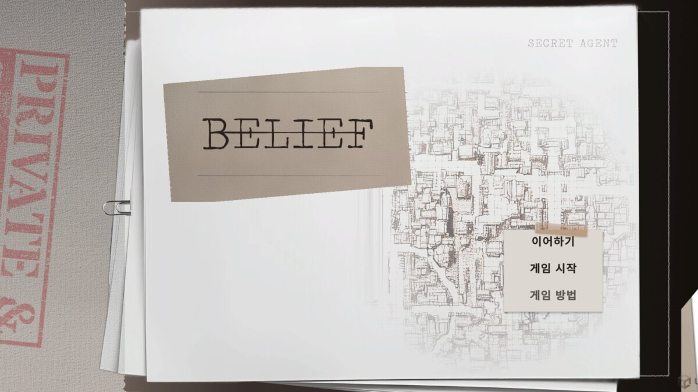
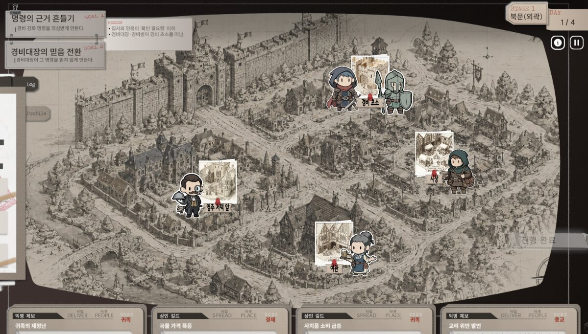
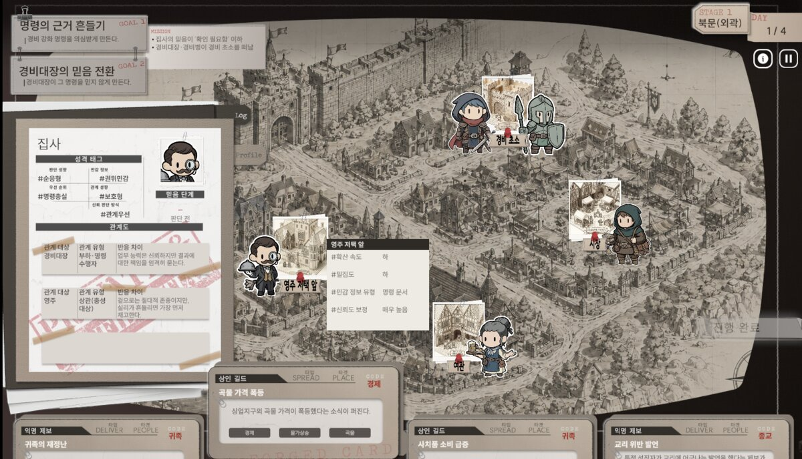
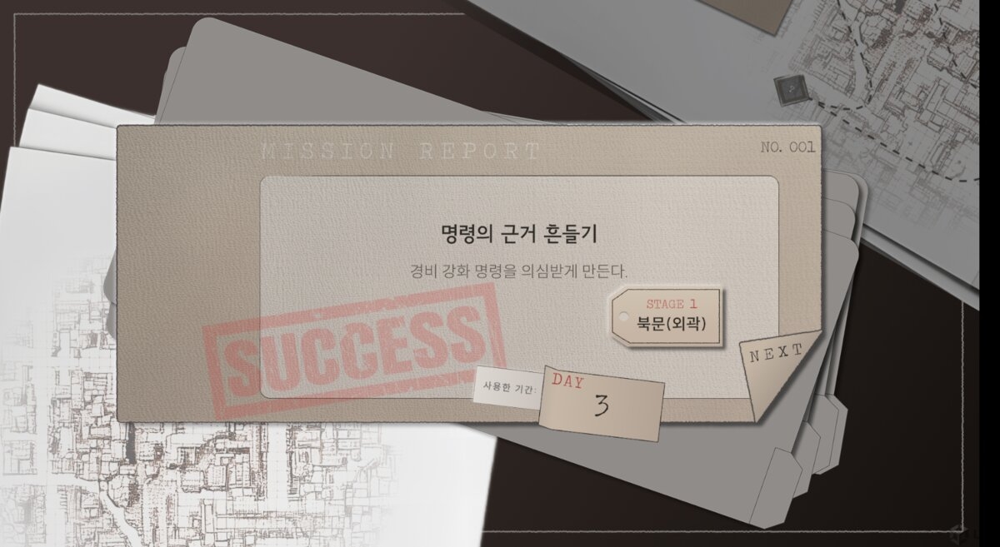

대표 프로젝트
01 — HACKATHON · 2026.07 – 08
BELIEF
AI 기반 정보전 전략 시뮬레이션 · 콘텐츠 기획 / 프로젝트 관리(PM) · NHN AI 해커톤 · 3인 팀
“사람은 행동이 아니라, 믿음으로 움직인다.” 플레이어는 NPC를 직접 조종하지 않는다. 대신 정보를 적절한 장소에 퍼뜨리거나 특정 인물에게 전달해, NPC가 성격·관계·기존 믿음을 바탕으로 스스로 판단하고 행동하도록 유도하는 전략 시뮬레이션입니다.
문제
해커톤 짧은 기간 안에 3인 팀이 실제로 완성할 수 있는 기획이 필요했다.
결정
정보 시스템을 확산형·전달형 둘로 단순화하고, 직군별 기획서를 나눠 전달했다.
결과
해커톤 기간 안에 플레이어블 빌드를 완성했다.
MY PART
콘텐츠 기획 · 프로젝트 관리(PM)
3인 팀에서 전체 게임 기획(시나리오 · 시스템 · 콘텐츠)을 설계하고, 이를 팀원이 바로 작업할 수 있는 단위로 쪼개 전달하는 것이 제 핵심 역할이었습니다. 해커톤 기간 안에 플레이어블 빌드를 완성하는 것이 목표였기에, ‘좋은 기획’보다 ‘팀이 실제로 따라갈 수 있는 구조’를 만드는 데 무게를 뒀습니다.
- 정보 시스템을 두 갈래로 단순화 — 소문처럼 퍼지는 확산형(SPREAD)과 특정 인물이 받아야 하는 전달형(DELIVER). 카드 형태만 보면 사용법이 정해지도록 설계해 플레이어의 학습 비용을 줄였습니다.
- 콘텐츠 직접 설계 — 스테이지 4개, NPC 19명 전원 프로필(성격 · 관계 · 기존 믿음), 정보 카드 30장(10개 카테고리 × 3장), 신뢰 단계 5단계 표준, 피날레 메커니즘
- 미션 클리어 조건을 OR 로직으로 설계해 플레이어가 한 가지 공략에만 묶이지 않도록 했습니다.
- 직군별 기획서 분리 전달 — 아트에는 스테이지 · NPC · 카드 콘텐츠 기획서를, 개발에는 턴 진행 · 카드 판정 · 신뢰 상태 전이 로직을 담은 시스템 기획서를 전달하고, 구현 중 발견된 이슈를 기획으로 피드백받아 반영했습니다.
- PM 업무 — 노션 기획 허브(7개 DB) 구축, SFX 소싱, 팀 일정 조율
- 테스트에서 드러난 문제를 설명이 아니라 구조로 해결 — 학습 비용을 줄이려 카드를 두 갈래로 단순화했는데도 테스트에서는 여전히 막혔습니다. 튜토리얼 문구를 늘리는 방향 대신, 첫 스테이지 자체를 배우는 구간으로 다시 설계하고 정보를 UI에 상시 노출시켰습니다. 규칙을 단순하게 만드는 것만으로는 부족하고, 그 규칙을 언제 어떻게 보여줄지까지가 기획이라는 걸 확인한 지점입니다.
- 플레이어가 NPC를 직접 조종하는 방식도 검토했지만 버렸습니다 — 이 프로젝트의 핵심 차별점은 AI NPC의 자율적 판단 그 자체입니다. 플레이어가 개입하는 순간 그 자율성이 가려져 셀링포인트가 사라진다고 판단했습니다.




30
정보 카드 (10종 × 3장)
19
NPC 전원 프로필
4
스테이지
5단계
신뢰 단계 표준
소개 영상
플레이 영상